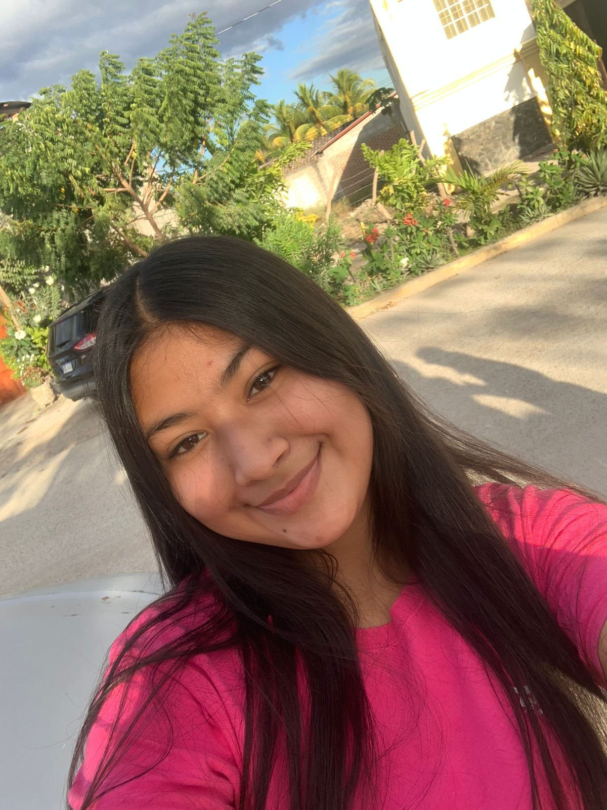

| PORTAFOLIO PERSONAL |  | A | M | I | P | |||||||||||||||||||||||||||||||||||||||||||||||||||||||||||||||||||||
| Pagina Principal | Gustos Personales | Formacion Academica | Sueños y Metas | Virtudes |
Educación Preescolar ---- | Estudie la primaria en el "Jardín de niños Rafael Pineda Ponce" en Yarumela, La Paz a los 5 años de edad, graduandome a los 7 años. Curse los dos años de requisito en el Jardín, los cuales ame, ya que tuve unos maestros excelentes, me sentía en familia, fueron dos años de muchos aprendizajes. En ese momento recuerdo que una de las cosas que mas me gustaban era el area recreativa, ya que había bastantes juegos, y realizabamos muchas dinamicas. Aún conservo relación con mis maestros y algunos de mis compañeros de esa epoca. | |||
Primaria---- | ||||
| A los 6 años de edad ingrese a la escuela "José Trinidad Reyes" en Yarumela, La Paz. Estudié los primeros 3 años en la jornada vespertina. Me gustba mucho ir a la escuela en realidad, haciamos muchas actividades, en la mayoria participaba; en 3º Grado empecé a formar parte del cuadro de danza de la escuela. Saliamos a varios lugares a participar, y convivia con muchas personas. Empecé el 4º grado y lo realicé en la jornada matutina. Y como nunca me ha gustado levantarme temprano, asi que se me hizo muy dificl acostumbrarme, pero, lo logré. Seguía en el cuadro de danza, y lo disfrutaba muchisimo. También estuve en un cuadro de futbol de niñas y tambien saliamos a competir con otras escuelas. en 5º grado, me eligieron para poder impartir mis conocimientos, siendo tutora de los niños de 1º y 2º grado. Formando parte del Grupo Terra. Contuve numerosas experiencias y aprendí muchas cosas. | ||||
Secundaria---- | ||||
| Ingresé a los 12 años de edad al Instituto Polivalente "Doctor Doroteo Varela Mejia", en Yarumela, La Paz. Estudié en el isntituto los primeros 3 años de ciclo básico; siendo un colegio técnico, el primer año pasé por varios talleres, como: agronomia, madera, corte y confección, hogar(reposteria) y servicio administrativo.En segundo año tenia que optar por uno de los talleres y elegí Belleza y Cosmetología. Y en tercer año me trasladé al taller de Servicio Administrativo. En el instituto obtuve muchas experiencias buenas y malas, conocí personas que no me hacian bien y que de alguna manera influian en mí, como también conocí personas que hasta el dia de hoy permanecen en mi vida de buena manera. | ||||
|
A los 15 años me trasladé al Institruto Marista "La Inmaculada". Curse decimo grado de manera virtual, fue un año muy dificl con muchas experiencias que debido a la situación de la pandemia serán inolvidables. A pesar que lo curse virtualmente mis compañeros me recibieron de una buena manera, la cual agradezco. También tenía el apoyo emocional de mi familia y eso me ayudo mucho. LLegué a onceavo grado y la pandemia aún permanecia, por lo tanto tuvimos muchas medidas de seguridad al momento de ingresar al colegio de manera semi-presencial. Actualmente estoy en mi ultimo año de secundaria, estudiando la carrera de Informática. |
||||